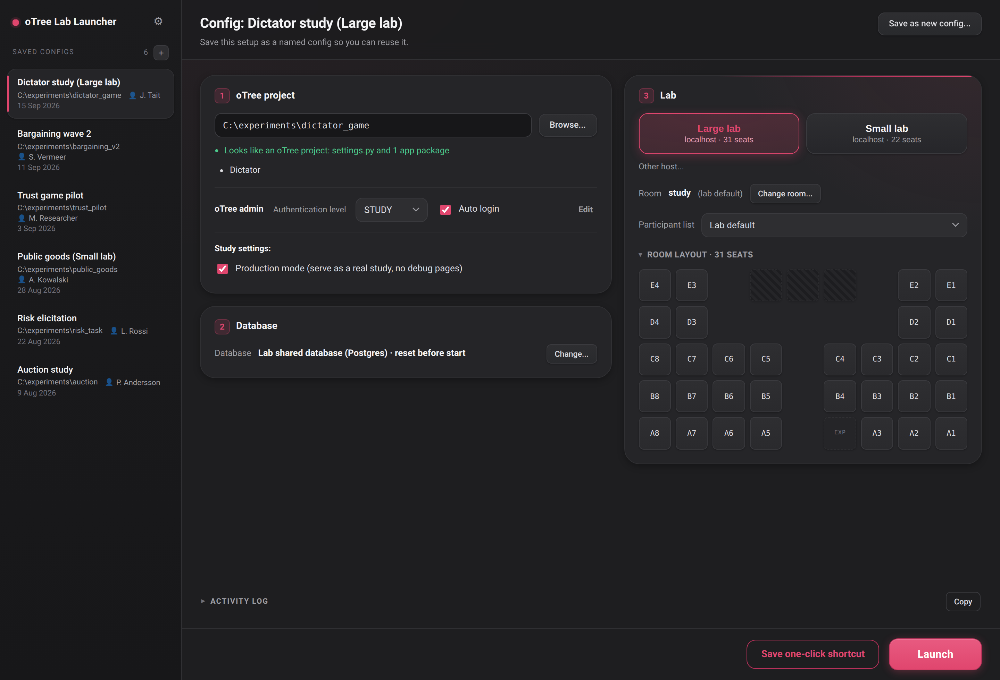

oTree Lab Launcher
GitHubMaking an oTree project run in the lab can be a hassle. Your lab manager sets it up once. Any future experiment then works in just three clicks: point it to the new oTree folder and run.
- Database handled for you. Use an existing or new Postgres database on each run.
- Rooms and participant links handled for you.
- Save a config to launch a study in one click. Re-running an old study is fast.
- Set the launcher up once. The lab manager sets up the launcher once so all future studies can get running with no lab-adaptation hassle.
- Open source and free.

Running in the lab
Put your oTree project on the lab computer, in a folder on the desktop identified with your name.
- Put your project on the lab computer, in a desktop folder named after you.
- Double-click "Start oTree LabLauncher" on the desktop (the shortcut with the little icon).
- Click "Browse" and point it at your oTree study folder.
- Get it ready for the lab.
- Launch.
- Optional: Save a one-click shortcut to the desktop for next time.
Full details and setup are on GitHub.